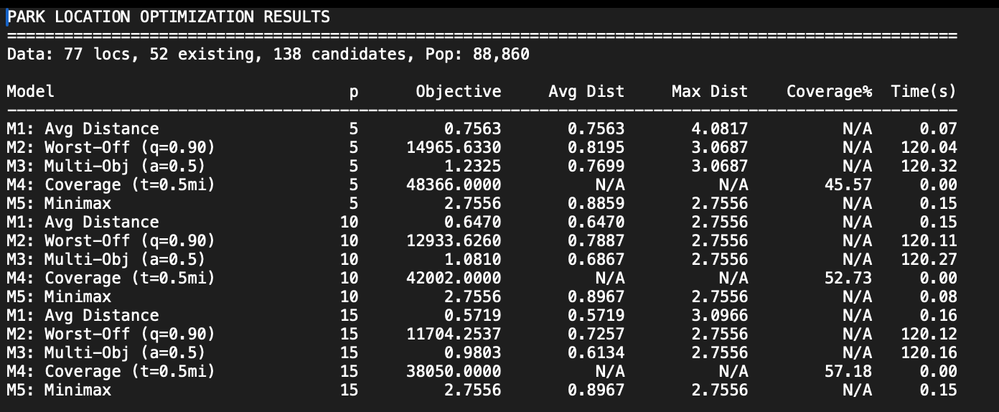

Asheville Urban Park Access Optimization
Making the efficiency–equity tradeoff visible.
Five facility-location models exploring how efficiency and equity objectives change proposed park investments for a population of 88,860.
- Context
- Clemson University, Engineering Optimization and Its Applications, Fall 2025
- My contribution
- Optimization modeling and comparative analysis
- Tools and methods
- Python, Gurobi, integer programming, facility location, scenario analysis
The problem
Choosing where to add parks involves competing goals. Minimizing average travel distance can favor densely populated areas, while an equity-focused model can prioritize residents who are farthest from existing parks. I explored how those choices change recommended investments.
My approach
I developed and compared five model objectives: population-weighted average distance, distance for the worst-served population, a weighted efficiency–equity objective, half-mile population coverage, and maximum distance to a park.
The study used 77 residential demand locations, 52 existing parks, 138 candidate sites, and a modeled population of 88,860. I compared scenarios with five, ten, and fifteen new parks. The model runs used reported time limits and optimality-gap tolerances, so the outputs should be read as solver results under those settings.
Study inputs
- Demand locations
- 77 residential demand locations
- Existing parks
- 52
- Candidate sites
- 138
- Modeled population
- 88,860
- Scenarios
- Five, ten, and fifteen new parks
Results that matter
Model 1 · Average distance
Population-weighted distance (miles)
Model 4 · Half-mile coverage
Population within 0.5 miles (%)
View the data as a table
| New parks | Model 1 · average distance (miles) | Model 4 · population within 0.5 miles |
|---|---|---|
| 5 | 0.7563 | 45.57% |
| 10 | 0.6470 | 52.73% |
| 15 | 0.5719 | 57.18% |
- Coverage objective: With ten new parks, Model 4 reported 52.73% population coverage within 0.5 miles.
- Average-distance objective: Model 1 reported a decrease from 0.7563 miles with five new parks to 0.6470 miles with ten, approximately a 14.5% reduction between those two modeled scenarios.
- Decision insight: Different objectives produced different recommended locations. The useful output was a set of transparent tradeoffs for planning, rather than one universally best answer.
Supporting evidence: original solver output


What I learned
An optimization objective encodes a choice about whose outcomes matter and how success is measured. Comparing objectives helps decision-makers see those choices before committing resources.
Scope note
This was an academic decision-support study. It did not construct parks, demonstrate realized travel reductions, or incorporate every feasibility factor such as land acquisition, park quality, safety, or community preferences. The coverage result and distance reduction come from different models and must remain separately labeled.